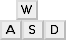

AssaultCube
Dieser Artikel wurde für die folgenden Ubuntu-Versionen getestet:
Ubuntu 14.04 Trusty Tahr
Zum Verständnis dieses Artikels sind folgende Seiten hilfreich:
AssaultCube  (ehemals ActionCube) ist eine Total-Conversion, welche auf der Engine von Cube basiert. Die Spielumgebung ist im Gegensatz zu Cube realistischer dargestellt und es wurden zusätzliche Funktionen ergänzt. AssaultCube bietet einen Single- sowie einen Multiplayermodus an. Hier stehen dreizehn verschiedene Modi, u.a. Deathmatch und Capture the Flag, zur Verfügung und können über ein lokales Netzwerk oder das Internet gegeneinander gespielt werden. Man spielt entweder in der Cubers Liberations Army (CLA) oder den Rabid Viper Special Forces (RVSF).
(ehemals ActionCube) ist eine Total-Conversion, welche auf der Engine von Cube basiert. Die Spielumgebung ist im Gegensatz zu Cube realistischer dargestellt und es wurden zusätzliche Funktionen ergänzt. AssaultCube bietet einen Single- sowie einen Multiplayermodus an. Hier stehen dreizehn verschiedene Modi, u.a. Deathmatch und Capture the Flag, zur Verfügung und können über ein lokales Netzwerk oder das Internet gegeneinander gespielt werden. Man spielt entweder in der Cubers Liberations Army (CLA) oder den Rabid Viper Special Forces (RVSF).
Das Spiel verfügt über einen integrierten Karteneditor.
| Loading... | Spielszene |
Installation¶
Paketquelle¶
AssaultCube kann bequem über die Paketquelle installiert [1] werden:
assaultcube-data (multiverse)
assaultcube (multiverse)
 mit apturl
mit apturl
Paketliste zum Kopieren:
sudo apt-get install assaultcube-data assaultcube
sudo aptitude install assaultcube-data assaultcube
Projektseite¶
Auf der Projektseite stehen mitunter aktuellere Versionen als in der Paketverwaltung zur Verfügung. Für die Nutzung dieser Version muss man im Vorfeld die folgenden Pakete installieren:
libsdl1.2debian
libsdl-image1.2
zlib1g
libogg0
libvorbis0a
libopenal1
libcurl3
mit apturl
Paketliste zum Kopieren:
sudo apt-get install libsdl1.2debian libsdl-image1.2 zlib1g libogg0 libvorbis0a libopenal1 libcurl3
sudo aptitude install libsdl1.2debian libsdl-image1.2 zlib1g libogg0 libvorbis0a libopenal1 libcurl3
Anschließend von cubers.net  das aktuelle Archiv für Linux herunterladen und entpacken [2] (z.B. nach ~/Spiele). In das Installationsverzeichnis wechseln und das Spiel über den Befehl
das aktuelle Archiv für Linux herunterladen und entpacken [2] (z.B. nach ~/Spiele). In das Installationsverzeichnis wechseln und das Spiel über den Befehl assaultcube.sh starten [3] [4].
Server¶
Über den Befehl server.sh wird der Server und über server_wizard.sh der Assistent gestartet [3] [4]. Weitere Informationen findet man unter Command line arguments .

Mods¶
Für das Spiel sind verschiedene Modifikationen über die folgenden Adressen verfügbar:

Für die Verwendung einer Modifkation muss die Ordnerstruktur das Spiels abgebildet werden. Hier die README des jeweiligen Mods beachten. Weiterführende Informationen findet man unter:
Editor¶
Der integrierte Karteneditor kann über die Taste E gestartet werden.
Tastenkürzel¶
| Tastenkürzel | |
| Taste(n) | Funktion |
|  | Steuerung |
 | Angriff |
| R | Nachladen |
 /
G /
G | Handgranatenwurf (Scharfschütze: Blick durch das Zielfernrohr) |
| Sprung | |
 (Mausrad) (Mausrad) | Waffenwechsel |
| | Messer |
| ⇧ | Ducken |
| 1 - 4 | Waffe wählen |
| T | Chat |
| Y | Teamchat |
| + / - | Durch Konsolen-Nachrichten scrollen |
| Alt | Karte |
| Tab ⇆ | Anzeigetafel |
| F1 / F2 | Wahlstimme ja / nein |
| F12 | Bildschirmfoto aufnehmen - wird im Homeverzeichnis unter ~/.assaultcube_VERSION/screenshots als .jpg-Datei abgelegt |
| ⌫ | Flagge abgeben |

Infobox¶
| AssaultCube | |
| Genre: | Ego-Shooter |
| Sprache: |  |
| Veröffentlichung: | 2006+ |
| Entwickler: | Rabid Viper Productions |
| Systemvoraussetzungen: | 50 MiB Festplattenspeicher / 256 MiB Arbeitsspeicher / 800 MHz Prozessor / Grafikkarte (32 MiB RAM/OpenGL-fähig) |
| Medien: | Download |
| Strichcode / EAN / GTIN: | - |
| Läuft mit: | nativ |

- Erstellt mit Inyoka
-
 2004 – 2017 ubuntuusers.de • Einige Rechte vorbehalten
2004 – 2017 ubuntuusers.de • Einige Rechte vorbehalten
Lizenz • Kontakt • Datenschutz • Impressum • Serverstatus -
Serverhousing gespendet von